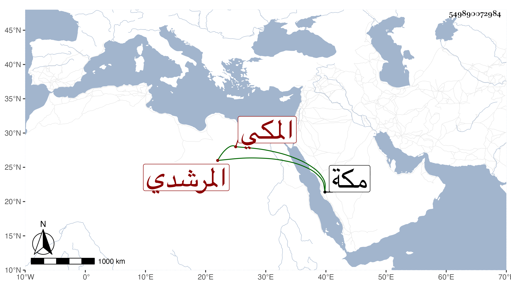

0902Sakhawi.DawLamic.ITO20230111-ara1.EIS1600.549890072984
Biography ID: 549890072984
679
علي بن أبي بكر بن عبد الغني بن عبد الواحد نور الدين أبو الحسن بن الفخر بن نسيم الدين المرشدي المكي شقيق عبد الغني الماضي سبطا القاضي نور الدين علي بن الزين الآتي . ولد في ثامن عشري شعبان سنة إحدى وسبعين وثمانمائة بمكة ونشأ في كفالة أبيه فحفظ القرآن والأربعين النووية وألفية العراقي والكافية في النحو لابن الحاجب والكنز والمختصر الأصلي لابن الحاجب والعمدة في أصولهم والتلخيص وعرض في سنة خمس وثمانين فما بعدها على البرهان بن ظهيرة وولده وأخيه وأبي القسم بن الضياء ويحيى العلمي وعبد المعطي في آخرين واشتغل في الفقه عند إسماعيل الأوغاني وفي العربية عند البدر حسن المرجاني وأكثر من مجالس الجمالي أبي السعود بحيث سمع عليه ابن ماجة والشفا وغيرهما وحضر عندي في المجاورة الرابعة بل قرأ علي اليسير من البخاري ثم لازمني في التي بعدها حتى أكمله ويذكر بمعاملات مع ضبط وربط وقرض ورفض وذكاء وحذق .
